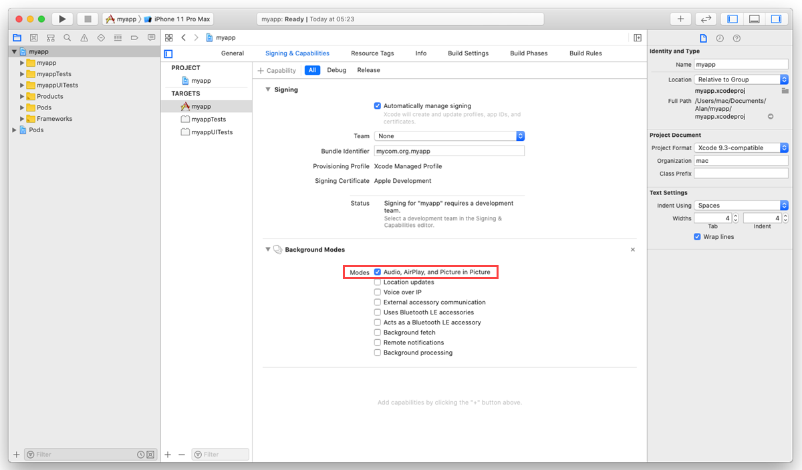
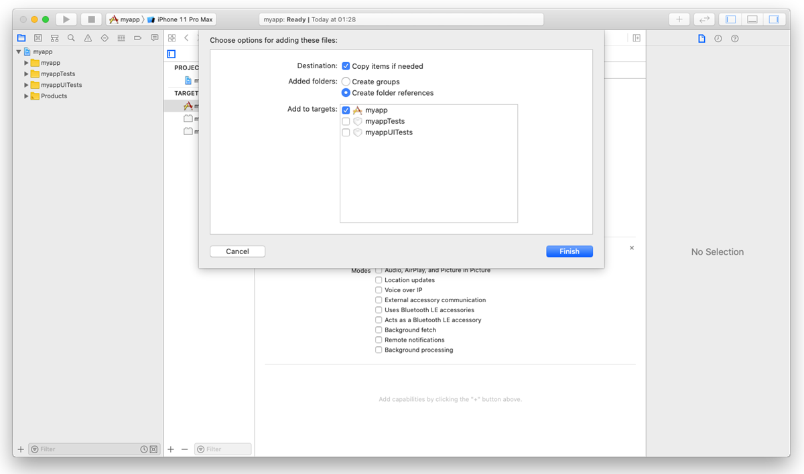
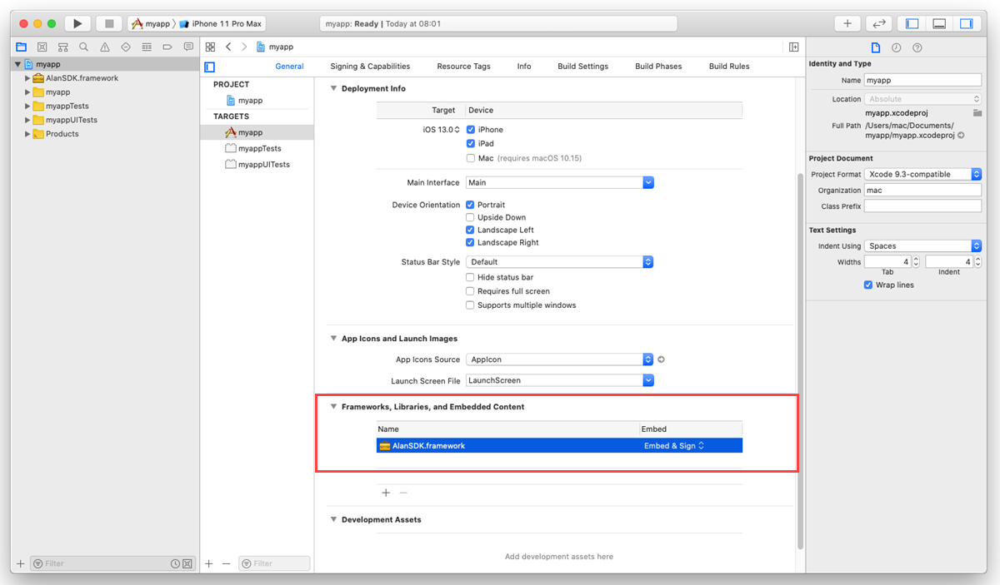
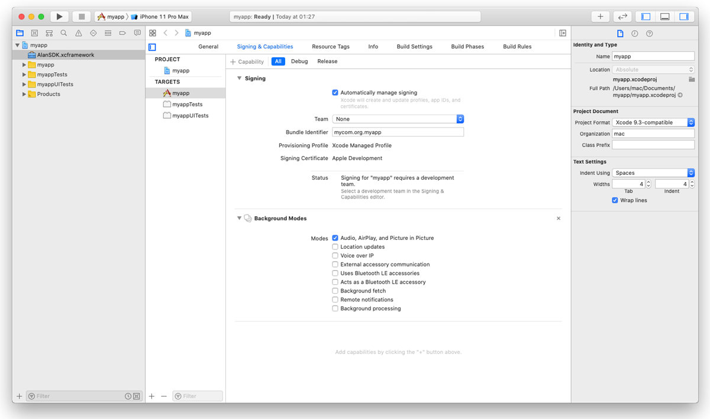

Alan iOS SDK¶

Alan can be integrated with iOS apps developed in Swift and Objective-C.
Integrating with Alan¶
To add Alan voice to an iOS app, you need to do the following:
Integrate with the app: Swift or Objective-C. As part of this process, you will:
Step 1. Get the Alan iOS SDK framework¶
First, you need to get the Alan iOS SDK framework and set up your XCode project to be used with Alan. You can do it in two ways:
Set up an XCode project with CocoaPods
Set up an XCode project manually
Do the following:
On the machine, open Terminal and install CocoaPods:
sudo gem install cocoapods
Go to the project folder and create a Podfile for the project:
pod init
Open the Podfile and edit it:
use_frameworks! platform :ios, '11.0' target '<Your Target Name>' do pod 'AlanSDK-iOS' end
In the project folder, install the dependencies for the project:
pod install pod update
In iOS, the user must explicitly grant permission for an app to access the user’s data and resources. An app with the Alan button requires access to:
User’s device microphone for voice interactions
User’s device camera for testing Alan projects on mobile
To comply with this requirement, you must add
NSMicrophoneUsageDescriptionandNSCameraUsageDescriptionkeys to theInfo.plistfile of your app and provide a message why your app requires access to the microphone and camera. The message will be displayed only when Alan needs to activate the microphone or camera.To add the key:
In the Xcode project, go to the Info tab.
In the Custom iOS Target Properties section, hover over any key in the list and click the plus icon to the right.
From the list, select Privacy - Microphone Usage Description.
In the Value field to the right, provide a description for the added key. This description will be displayed to the user when the app is launched.
Repeat the steps above to add the Privacy - Camera Usage Description key.
To allow the background mode for the iOS app, go to the Signing and Capabilities tab. In the top left corner, click + Capability and in the capabilities list, double-click Background Modes. In the Modes list, select the Audio, AirPlay, and Picture in Picture check box.
The background mode must also be turned on in the Alan Studio project. In Alan Studio, at the top of the code editor, click Integrations, go to the iOS tab and enable the Keep active while the app is in the background option.
Do the following:
Open the Alan iOS SDK release page on Alan GitHub.
Download the
AlanSDK.xcframework_<x.x.x>.zipfile from the latest release and extractAlanSDK.xcframeworkfrom the ZIP archive.
Drag
AlanSDK.xcframeworkand drop it onto the root node of the Xcode project.Select the Copy items if needed check box if it is not selected.
In the project tree, select the XCode project file and go to the General tab. Under the Frameworks, Libraries, and Embedded Content section, find
AlanSDK.xcframeworkand select Embed & Sign from the list.In iOS, the user must explicitly grant permission for an app to access the user’s data and resources. An app with the Alan button requires access to:
User’s device microphone for voice interactions
User’s device camera for testing Alan projects on mobile
To comply with this requirement, you must add
NSMicrophoneUsageDescriptionandNSCameraUsageDescriptionkeys to theInfo.plistfile of your app and provide a message why your app requires access to the microphone and camera. The message will be displayed only when Alan needs to activate the microphone or camera. To add the key:In the Xcode project, go to the Info tab.
In the Custom iOS Target Properties section, hover over any key in the list and click the plus icon to the right.
From the list, select Privacy - Microphone Usage Description.
In the Value field to the right, provide a description for the added key. This description will be displayed to the user when the app is launched.
Repeat the steps above to add the Privacy - Camera Usage Description key.
To allow the background mode for the iOS app, go to the Signing and Capabilities tab. In the top left corner, click +Capability and in the capabilities list, double-click Background Modes. In the Modes list, select the Audio, AirPlay, and Picture in Picture check box.
The background mode must also be turned on in the Alan Studio project. In Alan Studio, at the top of the code editor, click Integrations, go to the iOS tab and enable the Keep active while the app is in the background option.
Step 2. Integrate with the app¶
Note
The instructions below apply to the Storyboard user interface.
You need to integrate Alan with your app written in:
Swift
Objective-C
In the Xcode project, open the ViewController.swift file. You need to add the following Swift snippet to your view controller:
At the top of the file, import AlanSDK:
import AlanSDK
In the
ViewControllerclass, define theAlanButtonvariable:fileprivate var button: AlanButton!
In
viewDidLoad(), set upAlanButton. For more details, see Alan Config object and Alan button.import UIKit import AlanSDK class ViewController: UIViewController { /// Alan button fileprivate var button: AlanButton! override func viewDidLoad() { super.viewDidLoad() /// Setup the Alan button self.setupAlan() } fileprivate func setupAlan() { /// Define the project key let config = AlanConfig(key: "") /// Init the Alan button self.button = AlanButton(config: config) /// Add the button to the view self.view.addSubview(self.button) self.button.translatesAutoresizingMaskIntoConstraints = false /// Align the button on the view let views = ["button" : self.button!] let verticalButton = NSLayoutConstraint.constraints(withVisualFormat: "V:|-(>=0@299)-[button(64)]-40-|", options: NSLayoutConstraint.FormatOptions(), metrics: nil, views: views) let horizontalButton = NSLayoutConstraint.constraints(withVisualFormat: "H:|-(>=0@299)-[button(64)]-20-|", options: NSLayoutConstraint.FormatOptions(), metrics: nil, views: views) self.view.addConstraints(verticalButton + horizontalButton) } }
In
let config = AlanConfig(key: ""), define the Alan SDK key for your Alan Studio project. To get the key, in Alan Studio, at the top of the code editor, click Integrations and copy the value from the Alan SDK Key field.Run the app and tap the Alan button to speak.
Add this Objective-C snippet to your view controller.
Import AlanSDK:
@import AlanSDK;
Define the
AlanButtonvariable:@property (nonatomic) AlanButton* button;
In
viewDidLoad, set upAlanButton. For more details, see Alan Config object and Alan button.AlanConfig* config = [[AlanConfig alloc] initWithKey:@"YOUR_KEY_FROM_ALAN_STUDIO_HERE"]; self.button = [[AlanButton alloc] initWithConfig:config]; [self.button setTranslatesAutoresizingMaskIntoConstraints:NO]; [self.view addSubview:self.button]; NSLayoutConstraint* b = [NSLayoutConstraint constraintWithItem:self.button attribute:NSLayoutAttributeBottom relatedBy:NSLayoutRelationEqual toItem:self.view attribute:NSLayoutAttributeBottom multiplier:1 constant:-40.0]; NSLayoutConstraint* r = [NSLayoutConstraint constraintWithItem:self.button attribute:NSLayoutAttributeRight relatedBy:NSLayoutRelationEqual toItem:self.view attribute:NSLayoutAttributeRight multiplier:1 constant:-20]; NSLayoutConstraint* w = [NSLayoutConstraint constraintWithItem:self.button attribute:NSLayoutAttributeWidth relatedBy:NSLayoutRelationEqual toItem:nil attribute:NSLayoutAttributeNotAnAttribute multiplier:1 constant:64.0]; NSLayoutConstraint* h = [NSLayoutConstraint constraintWithItem:self.button attribute:NSLayoutAttributeHeight relatedBy:NSLayoutRelationEqual toItem:nil attribute:NSLayoutAttributeNotAnAttribute multiplier:1 constant:64.0]; [self.view addConstraints:@[b, r, w, h]];
Run the app and tap the Alan button to speak.
AlanConfig object¶
The AlanConfig object describes the parameters that are provided for AlanButton.
Create a new
AlanConfiginstance with your Alan project SDK key:- (instancetype)initWithKey:(NSString *)key;
Name
Type
Description
keyNSString
The Alan SDK key for your project in Alan Studio.
Create a new
AlanConfiginstance with your Alan project SDK key and custom data object:- (instancetype)initWithKey:(NSString *)key dataObject:(NSDictionary *)dataObject;
Name
Type
Description
keyNSString
The Alan SDK key for a project in Alan Studio.
dataObjectNSDictionary
(Optional) A valid JSON string or JSON object with authentication or configuration data to be sent to the voice script. For details, see authData.
For example:
AlanConfig *config = [[AlanConfig alloc] initWithKey:@"YOUR_KEY_FROM_ALAN_STUDIO_HERE"];
Alan button¶
To add the Alan button to your app, use the AlanButton class. This class provides a view with the voice button and instance methods to
communicate with Alan Studio.
Сreate a new AlanButton instance with the config object:
- (instancetype)initWithConfig:(AlanConfig *)config;
Name |
Type |
Description |
|---|---|---|
|
AlanConfig |
The AlanConfig object for configuration which is described above |
For example:
@interface ViewController ()
@property (nonatomic) AlanButton *button;
@end
@implementation ViewController
- (void)viewDidLoad
{
[super viewDidLoad];
AlanConfig *config = [[AlanConfig alloc] initWithKey:@"YOUR_KEY_FROM_ALAN_STUDIO_HERE"];
self.button = [[AlanButton alloc] initWithConfig:config];
[self.button setTranslatesAutoresizingMaskIntoConstraints:NO];
[self.view addSubview:self.button];
NSLayoutConstraint *right = [NSLayoutConstraint constraintWithItem:self.button attribute:NSLayoutAttributeRight relatedBy:NSLayoutRelationEqual toItem:self.view attribute:NSLayoutAttributeRight multiplier:1 constant:-20.0];
NSLayoutConstraint *bottom = [NSLayoutConstraint constraintWithItem:self.button attribute:NSLayoutAttributeBottom relatedBy:NSLayoutRelationEqual toItem:self.view attribute:NSLayoutAttributeBottom multiplier:1 constant:-20.0];
NSLayoutConstraint *width = [NSLayoutConstraint constraintWithItem:self.button attribute:NSLayoutAttributeWidth relatedBy:NSLayoutRelationEqual toItem:nil attribute:NSLayoutAttributeNotAnAttribute multiplier:1 constant:64.0];
NSLayoutConstraint *height = [NSLayoutConstraint constraintWithItem:self.button attribute:NSLayoutAttributeHeight relatedBy:NSLayoutRelationEqual toItem:nil attribute:NSLayoutAttributeNotAnAttribute multiplier:1 constant:64.0];
[self.view addConstraints:@[right, bottom, width, height]];
}
@end
Using the Alan button methods¶
You can use the Alan button methods to do the following:
Playing text via Alan¶
- (void)playText:(NSString *)text;
Name |
Type |
Description |
|---|---|---|
|
NSString |
Text to be played |
For example:
- (IBAction)didTapPlayButton:(id)sender
{
NSString *play = @"someString";
[self.button playText:play];
}
Sending a voice synchronized data event¶
- (void)playCommand:(NSDictionary *)command;
Name |
Type |
Description |
|---|---|---|
|
NSDictionary |
Data event to be sent |
For example:
- (IBAction)didTapDataButton:(id)sender
{
NSDictionary *data = @{@"someKey": @"someValue"};
[self.button playCommand: data];
}
Setting a visual state of the app¶
- (void)setVisualState:(NSDictionary *)visualStateData;
Name |
Type |
Description |
|---|---|---|
|
NSDictionary |
Data with the visual state description |
For example:
- (IBAction)didTapVisualButton:(id)sender
{
NSDictionary *visual = @{@"someScreen": @"someValue"};
[self.button setVisualState:visual];
}
Calling a function from the voice script¶
- (void)callProjectApi:(NSString *)method withData:(NSDictionary*)data callback:(void(^)(NSError *error, NSString *object))callback;
Name |
Type |
Description |
|---|---|---|
|
NSString |
Function name |
|
NSDictionary |
Function params |
|
Callback to handle the result |
For example:
- (IBAction)didTapCallButton:(id)sender
{
NSString *function = @"script::updateGPS";
NSDictionary *data = @{@"lat": @"55.0000", @"lon": @"55.0000"};
[self.button callProjectApi:function withData:data callback:^(NSError *error, NSString *object) {
NSLog(@"result: %@", object);
}];
}
Handling events from the Alan iOS SDK¶
To handle events coming from the Alan iOS SDK, add an observer for a notification with the kAlanSDKEventNotification name. For example:
- (void)viewDidLoad
{
[super viewDidLoad];
[[NSNotificationCenter defaultCenter] addObserver:self selector:@selector(handleEvent:) name:@"kAlanSDKEventNotification" object:nil];
}
- (void)handleEvent:(NSNotification*)notification
{
NSDictionary *userInfo = notification.userInfo;
if( userInfo == nil )
{
return;
}
NSString *jsonString = [userInfo objectForKey:@"jsonString"];
if( jsonString == nil )
{
return;
}
NSData *jsonData = [jsonString dataUsingEncoding:NSUTF8StringEncoding];
NSError *error = nil;
id unwrapped = [NSJSONSerialization JSONObjectWithData:jsonData options:NSJSONReadingMutableContainers error:&error];
if( error != nil )
{
return;
}
NSLog(@"unwrapped: %@", unwrapped);
}